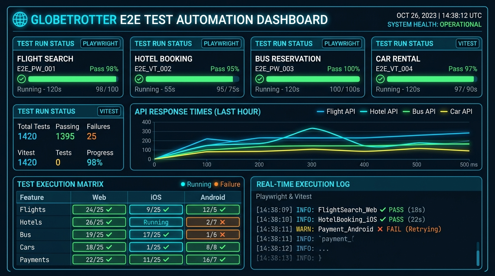
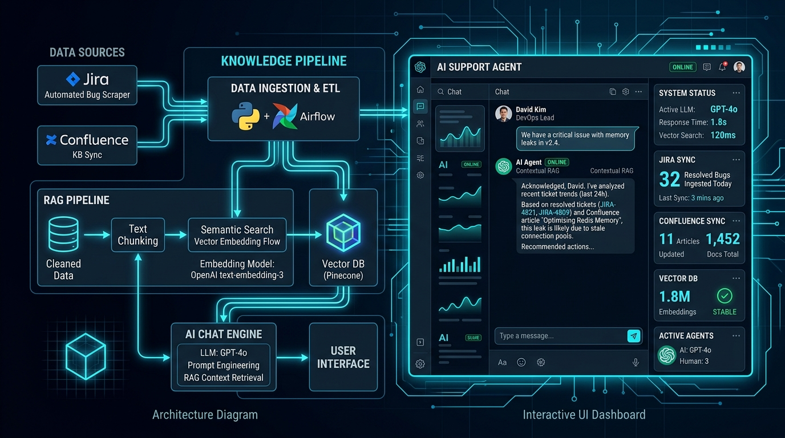
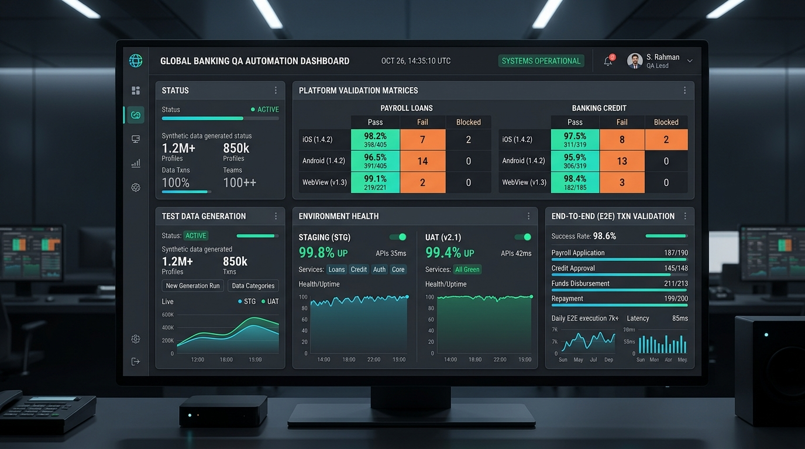
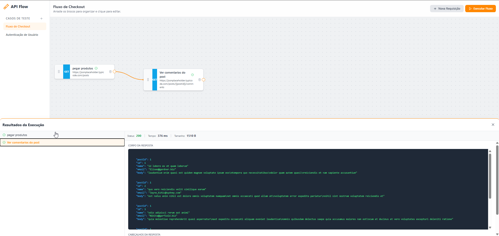

Arthur Perdigão
Engenharia de Qualidade de Software de alto nível unindo automação resiliente com Playwright & TypeScript, validação de APIs críticas e integração de Inteligência Artificial generativa.
Atuando desde 2018 com foco em automação de testes e qualidade de ponta a ponta. Experiência sólida em fintechs (crédito consignado) e travel techs, liderança técnica, ambientes Staging/UAT e arquitetura RAG para aceleração de suporte e esteiras de engenharia.
Trajetória & Experiência
Histórico comprovado em engenharia de qualidade, automação e inovação tecnológica em produtos de grande escala.
Paytrack
ATUAL • SENIOR SDETInter
FINTECH • BANCO INTER123milhas
TRAVEL TECHFor People Softwares
TECH LEAD • QAStefanini Brasil
INFRA & SEGURANÇAAeC
LIDERANÇA & SUPORTECases de Engenharia & Automação
Casos reais de arquitetura de testes, automação E2E de alta resiliência e soluções de Inteligência Artificial.

Travel Verticals — Suíte E2E Playwright & Vitest
Arquitetura de testes automatizados E2E cobrindo 4 verticais críticas (Aéreo, Hotéis, Rodoviário e Carros) com mais de 100 cenários de fluxos transacionais, mocks de parceiros e homologação contínua.

AI Support Agent — RAG + Scraping Jira & Confluence
Sistema proprietário de IA Generativa que cruza chamados históricos de bugs resolvidos e bases de conhecimento para acelerar em tempo real o atendimento das equipes de suporte N1 e N2.

Consignado Banking — Suíte Mobile & WebView
Estratégia completa de testes em Crédito Consignado (SIAPE, CLT, Leilão INSS) abrangendo plataformas Web, WebView e apps nativos iOS/Android com provisionamento de dados realistas em UAT e Staging.

APIFlowTester — Orquestrador Visual de APIs
Ferramenta open-source para modelagem visual drag-and-drop de fluxos de testes de integração e validação de requisições de APIs REST com execução em tempo real.
Tech Stack & Competências
Tecnologias, padrões de engenharia e certificações aplicadas na construção de sistemas confiáveis.
Bacharel em Sistemas de Informação
Faculdades Promove (2017 - 2020) • Tecnologia em Sistemas de Informação
Tecnologia em Sistemas de Redes
Faculdades Promove (2019 - 2020) • Infraestrutura, conectividade e segurança
AWS Academy Cloud Foundations
Amazon Web Services • Arquitetura de nuvem, computação distribuída e governança
Amazon AWS Cloud Computing
Amazon Web Services • Serviços em nuvem, resiliência e escalabilidade
Database Foundations
Modelagem relacional, manipulação SQL e integridade de dados
Java Foundations
Orientação a objetos, algoritmos e fundamentos da plataforma Java
Vamos Conversar sobre Engenharia e Qualidade?
Aberto a conversas para posições corporativas de Engenheiro de Qualidade Sênior, SDET e QA Lead.
E-mail Direto
arthuradm2016@gmail.com